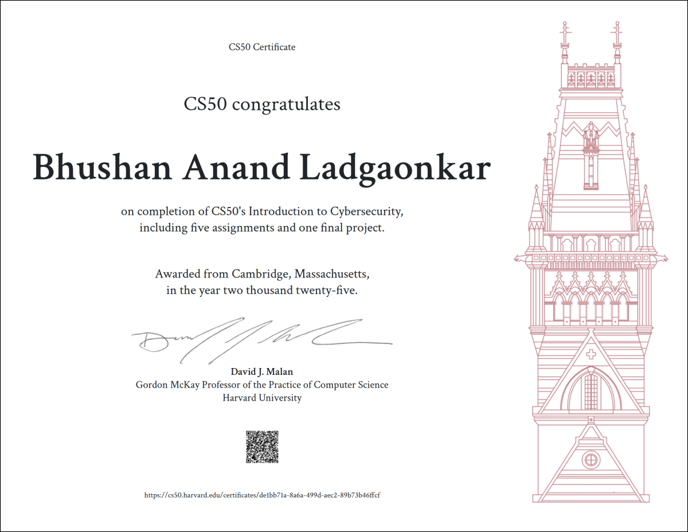
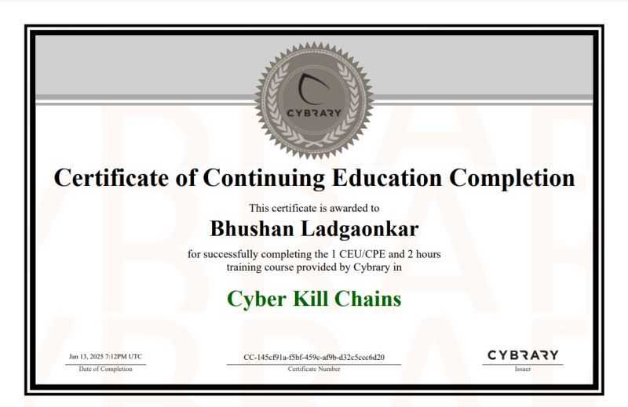
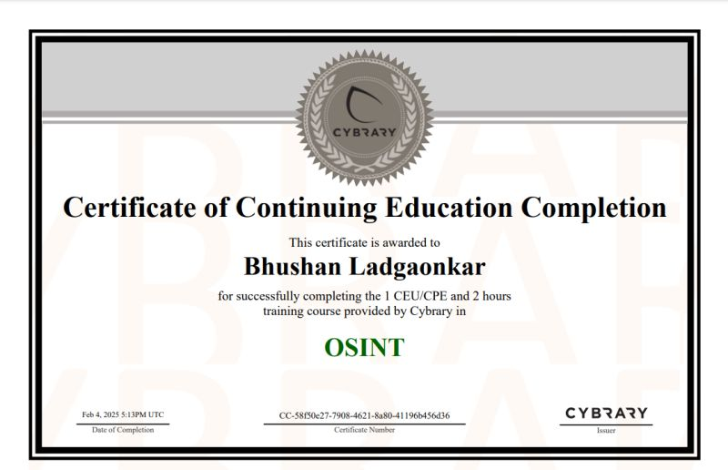
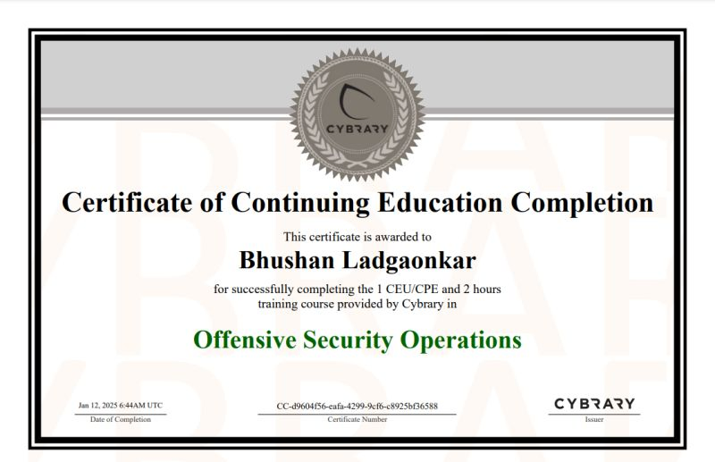
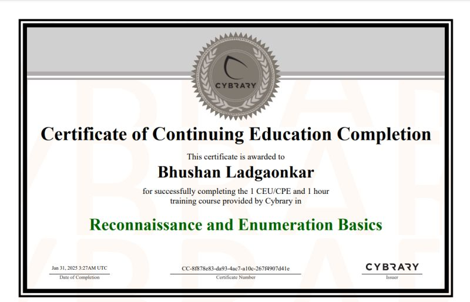

about
Hi, I'm Bhushan Ladgaonkar. I am a Computer Engineering student at Fr. Conceição Rodrigues College focused on offensive security operations and machine learning. I independently pursue advanced knowledge from sources like CS50 and pwn.college to deepen my expertise, with the goal of creating robust, secure digital experiences.
experience
NetFortress Technologies Pvt. Ltd.
Cyber Security Intern · June 2026 – June 2026
Refactoring legacy web authentication architectures to integrate multi-modal biological liveness verification and real-time gesture tracking. Hardening Flask-based API gateways against OWASP vulnerabilities, including CORS misconfigurations, session hijacking, and insecure deserialization. Implementing multithreaded backend optimizations using native thread-pool offloading to ensure secure, concurrent model inference under heavy production workloads. Authored system architecture specifications and secure deployment playbooks.
Oil and Natural Gas Corporation (ONGC)
Summer Intern | Database & Security Group · May 2025 – June 2025
Developed an ML-based Network Intrusion Detection System (NIDS) to address the limitations of static signature-based security. Engineered a data pipeline processing the UNSW-NB15 dataset (2M+ records) and optimized detection models (RandomForest, XGBoost) using SMOTE to handle class imbalance. Analyzed zero-day attack patterns under the guidance of the Database Programming division.
Institution's Innovation Council (IIC) — FRCRCE
IPR Activities Coordinator · Apr 2026 – Present
Coordinating IPR, patent filing, and research commercialization initiatives to foster an innovation ecosystem among engineering students.
skills
Languages
- Python
- JavaScript / TypeScript
- C / C++
- Java
- SQL
Security
- Kali Linux
- Burp Suite
- Threat Modeling
- DevSecOps (SAST)
- OSINT & Recon
- CVE Analysis
AI & ML
- PyTorch
- ONNX Runtime
- rPPG / Computer Vision
- MLX (Apple Silicon)
- RAG Pipelines
- Adversarial ML
Web & Backend
- React 19
- Flask / Gunicorn
- Docker (Multi-stage)
- Node.js / Express
- WebSockets / SSE
projects
TISD-Edu-AI: Local-First RAG Tutor
Privacy-first, on-device AI tutor for Grade 1–10 students built for Apple Silicon M4. Ingested 4,656 pages of NCERT and encyclopedia content into 6,422 semantic chunks across a 2.4M-point vector space (6422 × 384 dimensions). The Phi-3 (3.8B) inference pipeline achieves 41.42 tokens/sec at 1.72s latency with a 9.99GB memory footprint — zero data leaves the device.
View on GitHub — TISD-Edu-AI (opens in new tab)Headless Remote Workstation: Zero-Trust P2P Overlay
Architected a zero-trust, zero-exposition remote infrastructure to operate an encrypted, headless Kali Linux laptop 24/7 across dynamic multi-NAT networks from macOS. Implemented a decentralized WireGuard peer-to-peer overlay mesh with STUN-based UDP hole punching, coupled with OpenSSH loopback transport multiplexing and headless X11 display virtualization (XRDP/XFCE). Hardened Linux ACPI power subsystems to suppress S3 sleep states, achieving seamless cross-gateway mobility with a verified 9 ms latency.
View Code & Architecture — Headless Kali Architecture (opens in new tab)gemma-m4-agent: Production Local AI Agent
Production-grade local AI agent implementing Hybrid-Memory Orchestration (HMO) on Apple M4 — 16GB Unified RAM for inference, external APFS drive for long-term vector memory and session state. Runs Gemma 4 8B (8-bit quantized) via MLX with real-time SSE token streaming and DuckDuckGo-grounded web search. Solved LLM hallucinated turn-leakage via dual-gate stop logic: silicon-level token ID injection + software-level rolling string-match guard.
View on GitHub — gemma-m4-agent (opens in new tab)MendikotZero: AlphaZero RL Agent
Engineered an autonomous AI agent for the Indian card game 'Mendikot' using Deep Reinforcement Learning. Implemented the AlphaZero architecture from scratch, utilizing Monte Carlo Tree Search (MCTS) guided by a Dual-Head Neural Network. The agent was trained via self-play without human data, evolving from random moves to advanced strategic planning.
View Code & Paper — MendikotZero (opens in new tab)CS50 Cybersecurity: Anatomy of a Critical Failure
CVE-2025-61882 — Oracle Agile PLM (CVSS 9.8)Technical forensic analysis of a critical Path Traversal vulnerability in Oracle Agile PLM. Deconstructed the input validation failure and proposed defense-in-depth remediation strategies including Path Canonicalization and Least Privilege architecture.
Watch Analysis — CS50 Cybersecurity CVE-2025-61882 video (opens in new tab)Network Intrusion Detection System (NIDS)
Developed a high-performance NIDS using machine learning to detect novel and zero-day attacks. Executed a full data science workflow on the UNSW-NB15 dataset (2M+ records). The final Random Forest model (with SMOTE) achieved an excellent balance between high detection rates and low false positives.
View on GitHub — NIDS (opens in new tab)certifications

CS50 Cybersecurity (Harvard)

Cyber Kill Chain

OSINT

Offensive Security Ops

Recon & Enumeration
blog
Independent technical essays, system deep-dives, cultural critiques, and history.